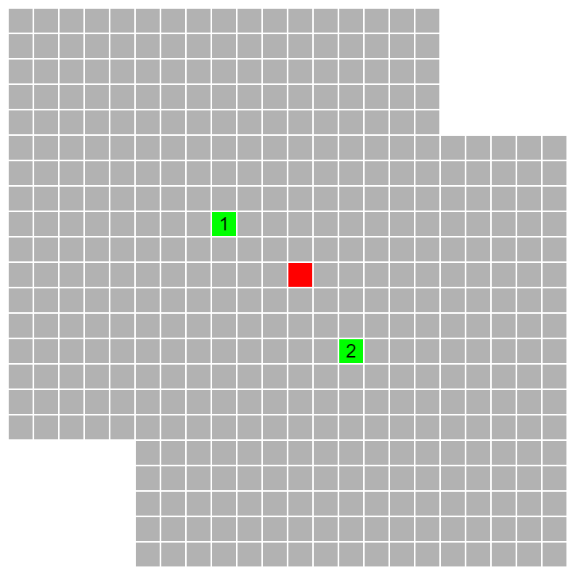
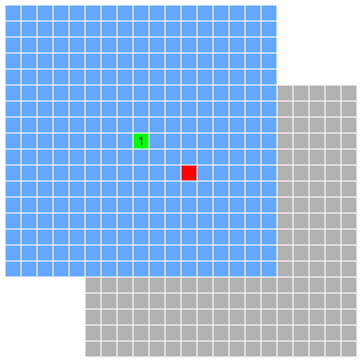
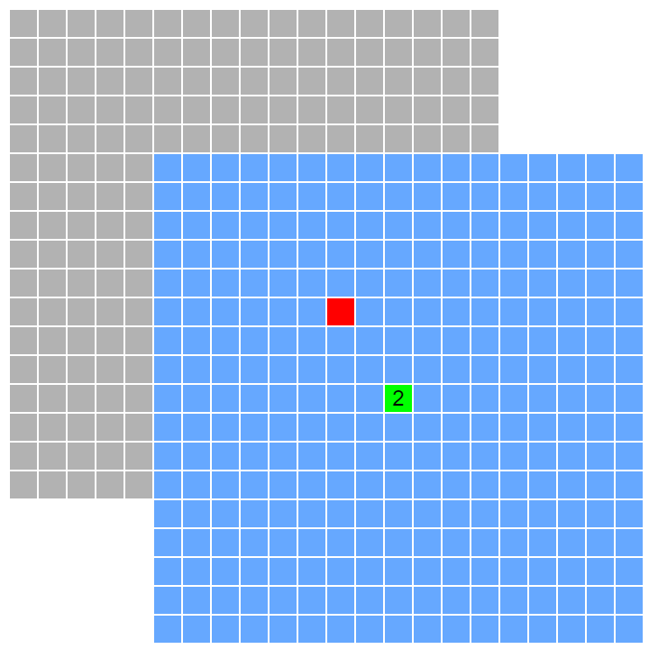
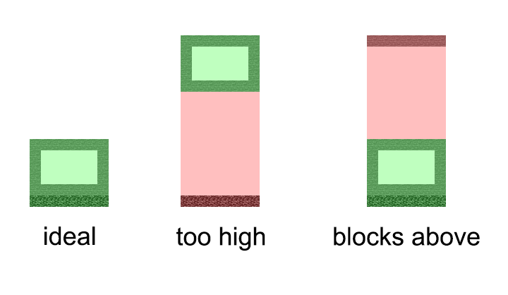
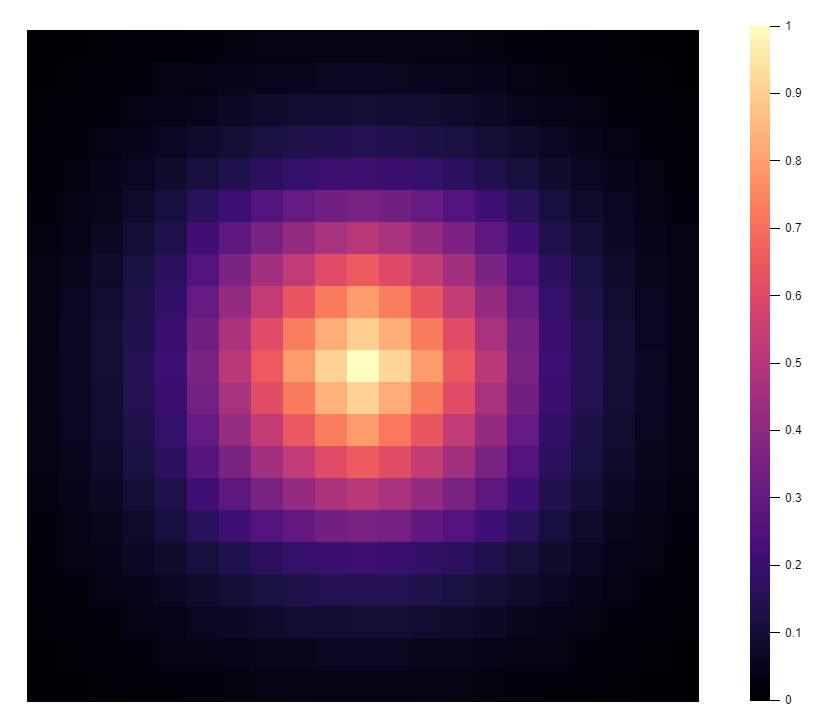

July 8, 2022
Minecraft Mob Spawning, Explained (1.19)
Prologue: Thanks to all the members of the technical Minecraft community who answered my requests for comments and clarifications.
This article aims to fully describe the Minecraft spawning algorithm as it exists in Java Edition 1.19.
These are the major steps in the spawning algorithm, in order:
- Collect mob cap data
- Run spawning attempts, depending on mob caps
- Despawn entities
But without further ado, let's dive in!
Mob Categories §
The spawning algorithm categorizes all mobs into one of several categories, which are listed here.
| Mob Category | Description |
|---|---|
| Monster | Hostile mobs |
| Creature | Animals |
| Ambient | Bats only |
| Axolotls | Take a guess... |
| Underground water creatures | Glow squid only |
| Water creatures | Dolphins and squid |
| Water ambient | Fish |
| Miscellaneous | Boats, minecarts, etc. |
Mobs in the miscellaneous category are not involved in natural mob spawning.
Mob Cap §
Spawning for each mob category can only occur if the number of mobs in loaded chunks belonging to that category is lower than a value called the mob cap.
The mob cap for each category is calculated from a base value and scales linearly with the number of loaded chunks. Here is the exact formula:
| Mob Category | Base mob cap |
|---|---|
| Monster | 70 |
| Creature | 10 |
| Ambient | 15 |
| Axolotls | 5 |
| Underground water creatures | 5 |
| Water creatures | 5 |
| Water ambient | 20 |
The number of spawnable chunks is the number of loaded chunks that are within 8 chunks of a player. In other words, ever player has 17x17 grid of spawnable chunks centered on them.
This is where the 289 found in the mob cap equation comes from; in singleplayer, there will always be 289 spawnable chunks since there is only one player in the game, so the mob cap will be equal to the base value for every category.
On a server, if all the players are spread out so that none of their 17x17 chunk regions overlap, the global mobcap for each category will be equal to the singleplayer mobcap multiplied by the number of players; if there is overlap, the global mobcap will be less.
If the number of mobs in a category exceeds the global mobcap, spawning for that category is entirely skipped. Note that if the number of mobs does not exceed the mob cap, spawning will proceed; however, by the end of the spawning cycle, the number of mobs may exceed the mob cap. This is possible because the mob cap is only evaluated once at the start of spawning for each tick.
If the global mob cap is not met, the game then checks the local mob cap on a chunk-by-chunk basis. Each player has a local mob cap, which simply counts the number of mobs in each category within the spawnable chunks surrounding that player. For a given category and chunk, if there is at least one player within range whose local mob cap isn't filled, spawning can proceed.
Practical Example §
Suppose the game is currently evaluating monster spawning for the chunk highlighted in red.
There are 434 loaded chunks, so the global monster mob cap is . If the total number of monsters in the world is greater than 105, no monster spawning will happen in any chunks.
If the global mob cap is not met, the game proceeds to check each player's local mob cap. First, it retrieves the number of monsters within player 1's spawnable chunks, highlighted in blue here:
If there are fewer than 70 monsters in the blue chunks, monsters can spawn in the red chunk. Otherwise, the game moves on to player 2's local mob cap.
The local mob cap helps ensure that that no player can take up an excessive portion of the mob cap. Before 1.18, if multiple players were online and occupying different parts of the world, odds are the vast majority of spawning spaces would be outside of a mob farm, which would severely impact the number of spawns in a mob farm. Now, players in non-spawnproofed areas have minimal effect on mob spawning beyond their spawnable chunks because their local mob cap will prevent them from taking up more of the global mob cap.
Mob Cap Quirks §
Generally speaking, monsters that have special attributes preventing them from despawning do not contribute to the mobcap, so the following groups aren't counted:
- Mobs with the
PersistenceRequiredtag set to true, including:- Zombie piglins created when pigs are struck by lightning
- Witches created when villagers are struck by lightning
- All elder guardians
- Duplicated allays
- Skeletons created from skeleton traps
- Most mobs spawned as part of a structure, e.g. the black cat in a witch hut
- Mobs that are riding an entity/vehicle
- Fish and axolotls from buckets
- Endermen carrying blocks
- Raiders that are part of raids
There is a narrow class of mobs that contribute to the monster mob cap but do not despawn, meaning that if enough of these mobs are accumulated to fill the mob cap hostile mob spawning will be disabled for the entire world. Such a device is called a mobswitch. Examples include:
- Shulkers
- Wardens
- Withers
- Zombie villagers which are converting or have been traded with before
Spawning §
Now, the game actually starts looking for a location to spawn a mob. It begins by selecting a random X and Z value; next, it looks up the height of the highest non-air block at that X/Z combo, and picks a random Y-value between the minimum build height and the Y-coordinate of air block above the highest block. Once a location is picked, the game checks if the block at that location is a full block, soul sand or mud. If so, the spawn attempt immediately ends. Otherwise, it will make up to three attempts to spawn a pack of mobs near that location.
The heightmap is a critical factor in the performance of a farm. Spawning attempts are evenly distributed along the Y-axis, so you want to minimize the chance that a spawn attempt occurs above or below your farm. Thus, there are two things you should keep in mind:
- Always try to build mob farms as low as possible.
- Avoid placing solid blocks above mob farms.

Pack Spawning §
Minecraft spawns all mobs in packs, meaning that one spawn attempt may result in multiple mobs being spawned. Keep in mind that the algorithm can be rather idiosyncratic and knowing all the details is not too important when it comes to farm optimization.
The game starts by setting a counter for the number of remaining attempts to spawn a pack of mobs. This counter is initialized with a random value from 1 to 5.
Next, the game adds a random X and Z offset between -5 and 5 to the current position. These values are picked so that smaller offsets are more common than further offsets; specifically, they follow a triangular distribution. Next, the game checks if the spot is within 24 blocks of the player or the world spawn point. If either of these conditions is met, the game repeats the process. Note that each time, the offset is added to the already-offsetted position, which means that pack spawn attempts can wander rather far away from the initial position (up to 20 blocks for a pack size of 4). However, in practice, this is unlikely; here's a heatmap showing the spatial distribution of pack spawn attempts.

As you can see, most of the attempts end up pretty close to the initial location; in fact, around 76% of all attempts are within 5 blocks of the initial location.
Pack spawning is why building an overhang in a mob farm may increase its rates. By raising the heightmap in the blocks surrounding the spawning platforms, spawn attempts that begin outside of the farm could still find their way in. This is also why you should never place solid opaque blocks at foot level anywhere in the farm, since if a spawn attempt begins at that position it will instantly end. This includes the walls of the farm.
Anyways, if the position is not within 24 blocks of the player/world spawn and its chunk is loaded, the game gets the biome at that position and checks which mobs can spawn. At this stage, if the biome is a river biome and the category is water ambient mobs, there is a 98% chance that the spawn attempt will fail. At that point, the game moves the position by a random offset and checks the biome again until the attempt succeeds or the counter is exhausted.
Each biome has specific settings for what mobs can spawn, the relative frequency of each mob type, and their pack sizes. The Minecraft Wiki has this information on each of their biome pages, but I found that some of those figures are out of date, so I decided to make a page containing all the relevant. Check it out!
To find the probability of a mob type being chosen, simply divide its weight by the total of the weights of all mob types that could spawn in a given biome. For example, consider the plains monster weights:
| Mob Type | Weight |
|---|---|
| Spider | 100 |
| Zombie | 95 |
| Zombie Villager | 5 |
| Skeleton | 100 |
| Creeper | 100 |
| Slime | 100 |
| Enderman | 10 |
| Witch | 5 |
The sum of these weights is 515, so there's a chance that the game will pick a zombie to be spawned.
Once a mob type is picked, the game resets the aformentioned counter to the pack size of the mob. It then checks whether the selected position is valid for the mob using the following process:
- Check the distance to the nearest player. If the distance is greater than the mob's despawn distance:
- If the mob type is a creature, pillager, or shulker, continue.
- Otherwise, fail.
- Look up the biome of the current position. If it is different from the biome where the mob type was first selected, fail.
- If the mob's spawn placement type is not
NO_RESTRICTIONS, then run the following checks:IN_WATER: the block at the position is water and the block above it is not a full opaque block or soul sand/mudIN_LAVA: the block at the position is lavaON_GROUND:- The upper face of the block below the position is full and it emits a light level less than 14, with exceptions:
- Tedrock, barriers, glass, and tinted glass are not spawnable
- Trapdoors are not spawnable regardless of their position
- Soul sand and mud are spawnable
- Mangrove leaves and regular leaves are only spawnable for ocelots and parrots
- Ice is only spawnable for polar bears
- Magma blocks are only spawnable for fire immune mobs
- For the block at the position and above the position:
- The block at the position is not a full block, redstone component, rail, or a fluid
- If the block at the position causes damage, a mob may still spawn if it does not collide and the mob is immune; for example:
- Non-fire immune mobs cannot spawn in fire
- Only wither skeletons can spawn in wither roses
- Only polar bears, snow golems, and strays can spawn in powder snow
- Mobs cannot spawn in berry bushes or cacti
- The upper face of the block below the position is full and it emits a light level less than 14, with exceptions:
- The mob is not colliding with a block or entity at the spawn position
TODO: table of mob -> placement type
There are also further mob-specific rules that need to be satisfied for the spawning attempt to continue.
Axolotl §
The block underneath the position must be clay.
Water Animals §
The position's Y-level may be between zero and 13 blocks below the sea level, inclusive. The block below the position and the block above the position must be water. (It's possible that the bottom block can be flowing water—I have yet to verify this.)
Drowned §
The block below the position must be water,
Guardian §
Tropical Fish §
Monsters §
Animals §
Frog §
Ghast §
Glow Squid §
Goat §
Husk §
Magma Cube §
Mooshroom §
Ocelot §
Parrot §
Hoglin §
Piglin §
Polar Bear §
Rabbit §
Slime §
Stray §
Strider §
Turtle §
Wolf §
Despawning §
Every tick, entites check whether they should despawn according to the following rules.
- If the difficulty is peaceful, despawn hostile mobs
- If the mob is an enderman, don't despawn if carrying a block
- If the mob is an axolotl or fish, don't despawn if from a bucket
- If the mob is a raider, don't despawn if part of a raid
- If the
PersistenceRequiredNBT tag is set to true, don't despawn - If the mob is a passenger, don't despawn
- Calculate the distance to the nearest player
- If the distance is greater than the despawn distance and the mob should despawn when far away, despawn.
- If the distance is greater than the no despawn distance, the mob should despawn when far away, and over 600 ticks have elapsed, the mob has a 1/800 chance of despawning each tick
The no despawn distance is always 32, while the despawn distance depends on the mob's category. All mob categories despawn at a distance of 128 blocks except water ambient mobs, which start despawning at just 64 blocks away.
Here are the rules for whether a mob should despawn when far away.
- Default: despawn
- Golems: never despawn
- Shulkers are considered golems for some bizarre reason, maybe because they shoot projectiles? Anyways, this is why they don't despawn.
- Animals: never despawn
- Chickens: despawn if part of a chicken jockey
- Cats: despawn if not tame and alive for greater than 2,400 ticks
- Allay: never despawn
- Raiders: if part of a raid, never despawn; otherwise, despawn if not part of a patrol or over 128 blocks away
- Zombie Villager: despawn if not converting and zero villager XP (i.e. if a villager which has been traded with is infected, the resulting zombie villager won't despawn)
- Warden: never despawn
- Wandering Trader: never despawn
- Villager: never despawn
Endermites will disappear after 2,400 ticks unless the PersistenceRequired tag is set, but this mechanic is implemented separately from regular despawning.
Spawning Potentials §
In soul sand valleys and warped forests, a special "potential"-based mechanic is used to reduce the number of mob spawns without adjusting the mob caps themselves. If a mob is in one of these biomes, their position is recorded. Here are the relevant charge/energy values:
Soul Sand Valley
| Mob Type | Total Energy | Charge |
|---|---|---|
| Skeleton | 0.7 | 0.15 |
| Ghast | 0.7 | 0.15 |
| Enderman | 0.7 | 0.15 |
| Strider | 0.7 | 0.15 |
Warped Forest
| Mob Type | Total Energy | Charge |
|---|---|---|
| Enderman | 1.0 | 0.12 |
The positions of the counted mobs and their charge can be used to calculate a potential value for any block position. This potential value is used to nerf mob spawns; the exact algorithm is explained later in this article.